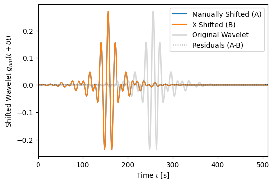

Time-Delay Filters
[1]:
import jax
import jax.numpy as jnp
import matplotlib.pylab as plt
import WDM
from WDM.code.discrete_wavelet_transform import WDM
from WDM.code.time_delay_filters.filters import time_delay_filter_Tl, time_delay_filter_Tprimel, time_delay_X
[2]:
dt = 1.0
Nt = 32
Nf = 16
N = Nt*Nf
wdm = WDM.WDM_transform(dt=dt, Nf=Nf, N=N, q=8, calc_m0=True)
Plot the time-delay filter functions
(84)\[T_\ell(\delta t) = \int\mathrm{d}f\exp(2\pi i f(\ell\Delta T-\delta t))
|\tilde{\Phi}(f)|^2\]
(85)\[T'_\ell(\delta t) = \int\mathrm{d}f\exp(2\pi i f(\ell\Delta T-\delta t))
\tilde{\Phi}\left(f-\frac{1}{2}\Delta F\right)
\tilde{\Phi}\left(f+\frac{1}{2}\Delta F\right)\]
[3]:
delta_t_vals = jnp.linspace(-15*wdm.dT, 15*wdm.dT, 500)
Tl_vals = {}
Tprimel_vals = {}
ell_max = 2
for ell in range(-ell_max, ell_max+1):
Tl_vals[ell] = jnp.array([time_delay_filter_Tl(wdm, ell, delta_t) for delta_t in delta_t_vals])
Tprimel_vals[ell] = jnp.array([time_delay_filter_Tprimel(wdm, ell, delta_t) for delta_t in delta_t_vals])
fig, axes = plt.subplots(ncols=2, figsize=(10, 4))
for ell in range(-ell_max, ell_max+1):
axes[0].plot(delta_t_vals/wdm.dT, Tl_vals[ell], label=r'$\ell={}$'.format(ell))
axes[1].plot(delta_t_vals/wdm.dT, Tprimel_vals[ell], label=r'$\ell={}$'.format(ell))
axes[0].set_xlim(delta_t_vals[0]/wdm.dT, delta_t_vals[-1]/wdm.dT)
axes[0].set_xlabel(r'Time-delay $\delta t/\Delta T$')
axes[1].set_xlim(delta_t_vals[0]/wdm.dT, delta_t_vals[-1]/wdm.dT)
axes[1].set_xlabel(r'Time-delay $\delta t/\Delta T$')
axes[0].set_ylim(-0.3, 1.3)
axes[0].set_ylabel(r'Time-delay filter $T_\ell(\delta t)$')
axes[1].set_ylim(0, 0.11)
axes[1].set_ylabel(r'Time-delay filter $T^\prime_\ell(\delta t)$')
axes[0].legend(ncols=5, loc='upper center', handlelength=1, columnspacing=1)
axes[1].legend(ncols=5, loc='upper center', handlelength=1, columnspacing=1)
plt.tight_layout()
plt.show()

Show how to use the \(X\) coefficients
(86)\[X_{nn';mm'}(\delta t) = \int\mathrm{d}t \, g_{nm}(t+\delta t)g^*_{n'm'}(t)\]
to time shift a wavelet.
[4]:
# pick a wavelet
n, m = 16, 2
g = wdm.gnm(n, m)
# manually time shift the wavelet
delta_t = 100.
from scipy.interpolate import interp1d
g_shifted = interp1d(wdm.times, g, kind='cubic', bounds_error=False, fill_value=0.0)(wdm.times+delta_t)
# reconstruct the time-shifted wavelet using the X coefficients
g_reconstructed = jnp.zeros_like(g)
for n_ in range(0, wdm.Nt):
for m_ in [m-1, m, m+1]:
X = time_delay_X(wdm, n, n_, m, m_, delta_t)
g_reconstructed += X * wdm.gnm(n_, m_)
fig, ax = plt.subplots(figsize=(6, 4))
ax.plot(wdm.times, g_shifted, label='Manually Shifted (A)')
ax.plot(wdm.times, g_reconstructed, label='X Shifted (B)')
ax.plot(wdm.times, g, label='Original Wavelet', c='gray', ls='-', lw=2, alpha=0.3)
ax.plot(wdm.times, g_shifted-g_reconstructed, 'k:', lw=1, label='Residuals (A-B)')
ax.set_xlim(wdm.times[0], wdm.times[-1])
ax.set_xlabel(r'Time $t$ [s]')
ax.set_ylabel(r'Shifted Wavelet $g_{nm}(t+\delta t)$')
ax.legend()
plt.show()

Note that when the \(X\) coefficients are used to time shift the wavelet basis the wavelets wrap around circularly in the array.
[5]:
# pick a wavelet
n, m = 16, 2
g = wdm.gnm(n, m)
# reconstruct the time-shifted wavelet using the X coefficients
delta_t_vals = [0., 50., 100., 150., 200., 250.]
g_reconstructed = {}
for i, delta_t in enumerate(delta_t_vals):
g_reconstructed[i] = jnp.zeros_like(g)
for n_ in range(0, wdm.Nt):
for m_ in [m-1, m, m+1]:
X = time_delay_X(wdm, n, n_, m, m_, delta_t)
g_reconstructed[i] += X * wdm.gnm(n_, m_)
fig, ax = plt.subplots(figsize=(6, 4))
for i, delta_t in enumerate(delta_t_vals):
ax.plot(wdm.times, g_reconstructed[i], label=fr'$\delta t={delta_t}\,$s')
ax.set_xlim(wdm.times[0], wdm.times[-1])
ax.set_xlabel(r'Time $t$ [s]')
ax.set_ylabel(r'Shifted Wavelet $g_{nm}(t+\delta t)$')
ax.legend()
plt.show()

[ ]: